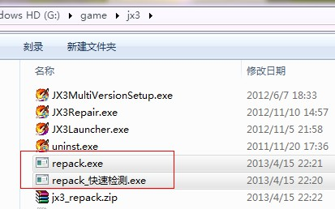
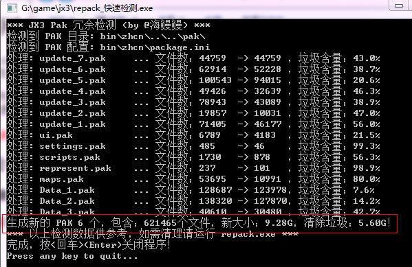

相信剑网3的老玩家都有同感，随着游戏程序的不断更新，游戏目录下的文件越来越大，
甚至将近 20G，最主要是其中的 pak 目录。由于程序设计的原因，
包文件只增不减，从而包含很多没用的垃圾数据。这不仅占用宝贵的硬盘空间，还会拖累游戏启动速度。
最近实在无法忍受，统计了一下 pak 目录大约有 15G ，
由于实在找不到相关工具做清理，于是自己动作制作了这个小工具，清理出 5.6G 的空间（约 38%）。
官方的开发版据说进行了全面改善，但距离普及尚有时日。现将此工具分享于此，供有需要的玩家使用。
请注意这并不是官方出品，如不放心请勿使用！本人保证此工具干净绿色并且不加壳，请务必认清下载网址，不要轻易从别的地址下载。
然后解压到游戏主目录，得到如下图所示的两个工具程序：

repack_快速检测.exe
该工具快速扫描您的 PAK目录，检测冗余含量并给出结果如下，
请参照红色框出部分决定是否需要进行清理！

repack.exe 进行清理运行前，请确认您的游戏所在磁盘至少还有 10G 以上的空闲空间，否则会失败！
这个过程可能会十分漫长，甚至 1 小时以上，但屏幕会显示进度，请耐心不要关闭它！！
bin/zhcn/package_bak.ini 如果存在，则将其改名为 package.ini 并取代原文件。pak 目录下所有的：update_re_*.pak 和 __tmp_*.pak 文件bin/zhcn/userdata，bin/zhcn/interface，bin/zhcn/ScreenShot 然后重新拷贝或安装游戏，再还原这三个备份目录。
pak 目录下所有非 update_re_ 开头的 PAK 文件。
（慎重！请确认可以正常玩游戏后再删除。）